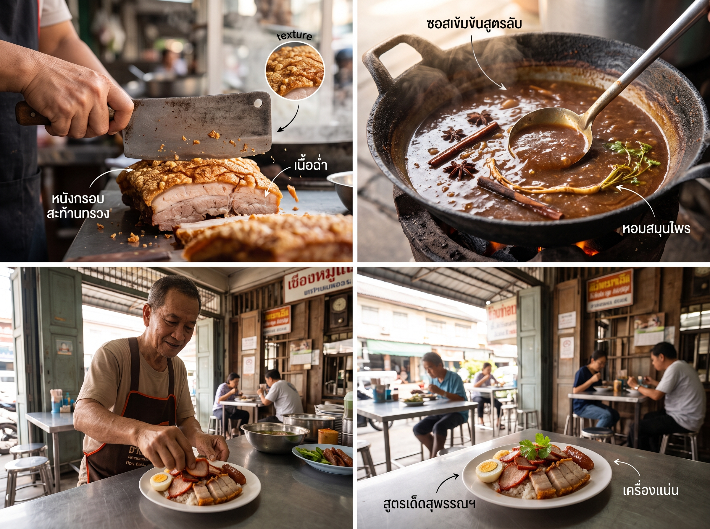

เจาะลึกข้าวหมูแดงสุพรรณบุรี! สูตรลับรสจัดจ้านที่แตกต่างจากที่อื่น

ข้าวหมูแดงสุพรรณบุรี: เมื่อรสจัดจ้านเอาชนะสูตรต้นตำรับ
จุดกำเนิด: จากช้าซิ้วกวางตุ้ง สู่ "ข้าวเสียโป" ริมแม่น้ำท่าจีน
ข้าวหมูแดงมีรากจากเทคนิคจีนกวางตุ้ง 2 อย่าง คือ ช้าซิ้ว (หมูแดงหมักย่าง) และ ซิ้วหยก (หมูกรอบ)
เข้าสยามช่วงต้นรัตนโกสินทร์ผ่านชาวจีนแต้จิ๋ว-กวางตุ้ง
ชื่อเดิม "ข้าวเสียโป/เฉโป" สันนิษฐานว่ามาจาก "สี่เป่า" (สมบัติ 4 อย่าง: หมูแดง หมูกรอบ เป็ดพะโล้ เครื่องใน) หรือ "เซียะโป" ภาษาฮกเกี้ยน
สีแดงของหมูในอดีตมาจาก อังคัก (ข้าวแดงหมัก) ซึ่งช่วยถนอมอาหารด้วย
สิ่งที่เปลี่ยนเมื่อมาถึงสุพรรณบุรี
สูตรดั้งเดิมรสหวานนำ ถูกปรับให้ถูกปากคนพื้นที่ที่ชอบรสจัด ด้วยการใส่น้ำพริกเผา + พริกไทยดำ ลงในน้ำราด กลายเป็นอัตลักษณ์ใหม่ที่หาไม่ได้จากที่อื่น
ข้าวหมูแดงสุพรรณบุรี vs สูตรนครปฐม/กรุงเทพฯ ต่างกันตรงไหน
| จุดเปรียบเทียบ | สูตรนครปฐม/กรุงเทพฯ | สูตรสุพรรณบุรี |
|---|---|---|
| น้ำราด | หวานนำ เค็มตาม เนื้อใส | ข้นเหนียวแบบพะแนง เค็มนำ เผ็ดติดลิ้น |
| วัตถุดิบซอส | แป้งมัน น้ำซุปกระดูก งาคั่ว ถั่วลิสง | น้ำพริกเผา พริกไทยดำ ซีอิ๊วดำพื้นถิ่น |
| หมูแดง | สีแดงสด หอมเครื่องหมัก | สีเข้ม กลิ่นควันไฟจากเตาถ่าน |
| เครื่องเคียง | พริกน้ำส้ม ต้นหอม | ซีอิ๊วพริกดอง ไข่เป็ดต้มยางมะตูม |
คำถามที่พบบ่อย
Q: อะไรคือความแตกต่างที่สำคัญที่สุดระหว่างข้าวหมูแดงสุพรรณบุรีกับสูตรอื่นๆ?
A: ความแตกต่างหลักอยู่ที่น้ำราดของสุพรรณบุรี ซึ่งมีความข้นคล้ายพะแนง รสชาติเค็มนำและเผ็ดติดลิ้น เนื่องจากมีการเพิ่มน้ำพริกเผาและพริกไทยดำ
Q: ทำไมข้าวหมูแดงสุพรรณบุรีถึงมีรสชาติจัดจ้าน?
A: สูตรดั้งเดิมของข้าวหมูแดงมีความหวานนำ แต่เมื่อเข้ามาในสุพรรณบุรี ได้รับการปรับเปลี่ยนเพื่อตอบสนองความชอบของคนท้องถิ่นที่ชื่นชอบรสชาติจัดจ้าน จึงมีการเพิ่มเครื่องปรุงรสที่มีรสเผ็ด
Q: "ข้าวเสียโป" คืออะไร?
A: "ข้าวเสียโป" หรือ "ข้าวเฉโป" คือชื่อเรียกข้าวหมูแดงในอดีต สันนิษฐานว่ามาจากคำว่า "สี่เป่า" ซึ่งหมายถึงสมบัติ 4 อย่างที่ประกอบไปด้วยหมูแดง หมูกรอบ เป็ดพะโล้ และเครื่องใน
ดูเมนูและราคา · แผนที่ & ติดต่อ · โทร 085-529-8799